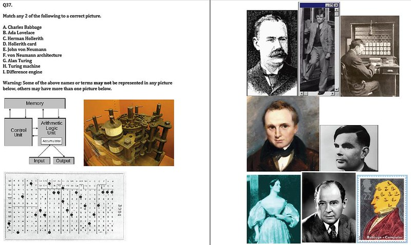
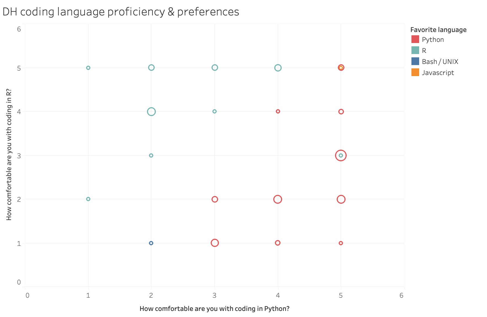

DSC #12: The DSC and the New Programming Language¶
by Katherine Bowers, Quinn Dombrowski, and Roopika Risam
November 2, 2021
We need to talk about coding.
Ever since DSC 7: The DSC and Mean Copyright Law, we’ve been putting an awful lot of code in these books. Text comparison algorithms, machine-generated text, principal component analysis, sentiment analysis.
But we’ve never had The Talk about Coding and DH and honestly, it’s overdue, because we don’t want you guys to get the idea that we’re assuming that of course you, dear reader, are comfortable with code. (What’s next, providing a properly LaTeX-formatted PDF download1 so the Data-Sitters Club might fit in with the computer scientist?)
It’s hard to do DH for long without running into code and programming languages that you don’t know. This is true whether you’re new to DH, or built a whole career on it. Turns out it’s even hard to watch the new Netflix “Baby-Sitters Club” series for long without a casual mention that Claudia’s sister Janine is learning Python. Janine is a genius, but does it take a tech genius to learn Python? Most of the Data-Sitters Club books have been in Python, but we’ve recently started branching out into R.
What’s the difference between a programming language, a library / package, and a model? If you’re going to dive into learning to code, what language should you choose? What’s it like to work with more than one? “The DSC and the New Coding Language” has got you covered – with some help from DH Twitter folks who answered our survey about all this.
Coding stories¶
Quinn¶
I spent 15 years “doing DH” – and even got hired for my dream job, supporting non-English DH at Stanford – before I meaningfully learned to code.
Sure, one of the very first technical things I learned in becoming a DH person was XSLT (thanks, David Birnbaum!) in 2006, but “learn some XSLT to generate some meaningful output from the XML you’ve painstakingly marked up” isn’t usually what people mean when they say you should “learn to code”. (Not familiar with XML, XSLT, or TEI? Check out DSC #5: The DSC and the Impossible TEI Quandaries.)
Many times, I had tried to follow that clichéd “learn to code” advice. I took Python in library school at UIUC in 2008! I got nothing at all out of it – granted, the course was taught by a grad student who confessed on the first day that she only knew the older programming language Perl, which operates using a very different kind of logic. The Python textbook for that class felt like one of the most insulting things I’d ever encountered:

I didn’t need this metaphorical magic, I just needed to learn how to code! At least, that’s what everyone kept telling me. But the class didn’t improve much from here; the midterm literally involved matching pictures to words:

My takeaways from the one and only programming course I actually sat through for credit? Functions are confusing, programming textbooks are asinine, and never try to learn Python from someone who admits upfront to only knowing Perl.
That was in 2009. In 2015 I published a book about Drupal for Humanists. Drupal is a content management system based on the PHP programming language and a MySQL database. I knew neither PHP nor SQL, but I also didn’t need to. You don’t need to know how to operate a plastic injection molding machine in order to build a Lego kit. Drupal works the same way: other people, coding-people, put together highly configurable modules that you could install and set up the way you needed for your project, all through a point-and-click interface.
During my six years of working in the central Research IT group at UC Berkeley, my boss (who proudly identified as an engineer) would reliably write in my performance evaluations that I should learn to code. Then a year would pass, we were always overwhelmed with user requests, and there was never any time for me to put towards that goal. Repeat for another year.
Only after I was hired in the Division of Literatures, Cultures, and Languages, and in the Library, at Stanford University in 2018 was I actually – finally – in a position where I both actually needed to learn to code, and had the time and space to do that.
What I learned (am learning?) is Python. My 2009 textbook couldn’t have been more wrong. Python could not be further from magic. Programming languages are more like real, human languages than we often give them credit for. If you’ve ever been serious about studying a language (whatever that looks like – whether that’s maintaining a major Duolingo streak or majoring in a language in college), you’ll have some idea about what I’m talking about. Learning a programming language takes time, practice, but most of all, it takes use. You’ll only actually get somewhere with a language if you use it. And given all the competing demands of life, you’ll only use it if you have a compelling reason.
At first, using it sucks. You’re confronted, over and over, with your own ineptitude. Not only can you not say what you want to say, you can’t even say something vaguely approximating what’s in your head. You look things up in dictionaries, you awkwardly kludge together nouns and verbs. With human languages, at least, assuming a sympathetic listener, you can thoroughly mangle half of the grammar and still generally be understood. Programming languages are less generous; they’ll throw an error and simply refuse to run if you stray very far in your syntax. So you struggle. You look things up. You try again. You force yourself to stop copying and pasting, and start re-typing it for practice. And after doing that enough times, one day you’re able to write some of the code without consulting things you’ve written already. And then someday you realize that when you Google how to do specific things, the info you find on StackOverflow might not be something you could’ve come up with off the top of your head, but it basically makes sense.
But you can only get there by practicing. And you’ll only practice if it’s worth it. And it’s only worth it if it’s the only way you, as a humanist, can do the things you want to do. I’m not the only Data-Sitter to have that experience, either…
Roopsi¶
Somewhere in the late 1980s, as hunched over an Apple IIe as an eight-year old could hunch, I dutifully typed in a sequence of letters and numbers that—voila!—could deduce how old someone was by entering the year of their birth. Our next act was to type in a string of commands to make the “turtle” (protip: it looked nothing like a turtle) create lines on the screen. [REPEAT 10 [REPEAT 5 [FD 2 RT 3] RT 20] Woo. Lines on the screen.

Not sure who had the bright idea to teach BASIC and Logo to elementary school students who would much rather be playing Oregon Trail (the 8 bit version, thank you very much) but that was a thing. In the early 1990s, my parents gave me a Mac LC that became my prized possession. They weren’t the kind to give extravagant gifts, so clearly this was a ploy to position me for an inevitable future as a South Asian in STEM. Naturally, they were thrilled when I used it to play Oregon Trail (Oregon Trail Deluxe, to be exact—I’d leveled up in the world) and Where in the World is Carmen Sandiego? To counteract the stultifying effects of such recreation, I was forced to play The Castle of Dr. Brain, because science.

By the mid-1990s, the free floppy (curiously, they weren’t the large floppy kind but the small, hard kind) disks advertising America Online started arriving in the mail, and I discovered that the Mac LC didn’t have a modem, which was a tragedy. So, I asked my cousin, a wannabe teen hacker (didn’t we all have that cousin?), how to access this magical portal of America Online and was introduced to the world of PCs, Warez, AOHell, and at least 15 other ’90s cyberfelonies (the statute of limitations have run out by now, right?).
My leap from the comfortable world of Macs to the land of PCs was cushioned by the introduction of Windows 95, and after roughly 90 million hours and 75 installation floppy (i.e. not floppy) disks later, I had turned my father’s work computer into my new toy. I certainly enjoyed breaking Windows 95 over and over by screwing around with the operating system, though I did not enjoy the long, disk-filled reinstallations. But I greatly preferred talking to strangers on the internet (if you were on the SPINOnline AOL chatroom in the mid-90s, we were probably friends), being angsty and misunderstood, making websites (Geocities-style), and occasionally foraying into Dreamweaver and Flash when I was feeling adventurous. To my mother’s dismay, none of this was setting me up for a Future in STEM™. (Astute observers will note that it absolutely did set me up for a Future in DH™, which largely consists of talking to strangers on the internet, being angsty and misunderstood, and making websites. Probably the occasional cybermisdemeanor too.)
Despite my comfort and familiarity with computers and front-end web development, the backend was the place where I broke things, reinstalled operating systems or applications, and started again. Never again had I experienced my childhood successes at deducing age or instructing a sham turtle to make lines. But that was totally fine—I had my internet strangers and my websites. When I first started doing what would eventually be called “digital humanities” as a graduate assistant at Georgetown’s Center for New Designs in Learning and Technology in the mid-2000s, I had enough comfort and facility to do my job, which didn’t involve coding. But when my research turned to digital humanities during my doctoral work, it was right smack in the middle of the debate about whether one had to be able to code to be a digital humanist. I couldn’t; therefore, I was a fraud.
When Miriam Posner’s blog post, “Some Things to Think About Before You Exhort Everyone to Code,” came out, I found solace in her arguments about how certain people, from certain demographics, were never socialized to learn how to code. That’s right! I was a woman of color and not socialized to code and therefore I couldn’t do it, didn’t need to do it, and everything was fine. (Conveniently forgetting that, in fact, my parents had bought me a computer, ostensibly to prepare me for my great South Asian Future in STEM™.) I became a righteous defender of the non-coders. I embraced out-of-the-box tools. People trying to make us code? Bigots, all of them.
And then, something happened. First, in the mid-2010s, Alex Gil decided that I would be an ideal experiment for his goal of convincing people to join the world of minimal computing. During a whiskey-fueled bender that lasted until 6am one Saturday night, he told me I would be learning how to use Jekyll, the static-site generator. An hour later, I knew how to work a command line, how to create a Jekyll site, and how to use Markdown. Then, in the Summer of 2018, a number of friends and I undertook the project Torn Apart/Separados, a series of data visualizations responding to the Trump Administration’s family separation policy for migrants at the U.S.-Mexico border. Since our site was built in Jekyll, my familiarity with it, along with my comfort in the command line meant that I could make my content contributions without pestering my teammates. However, the coding was being done by Moacir P. de Sá Pereira, so I didn’t have to worry about that. Later, we undertook a second volume of the project, in which I took the lead on developing concepts for our data visualizations. We’d been joined by an expert coder who wanted to use their skills to add layers of beautiful complexity to the visualizations—and then they got busy with other things and could not work with us. We had two options: 1) we could scale back our plans to create visualizations within the scope of having one expert coder or 2) it was all hands on deck and I, the ardent defender of not-coding, would, gulp, have to learn how to code. Being reasonable people who know our limitations…. we chose the latter.
I bought a hoodie. I stocked up on energy drinks. I watched every Marvel movie. I was becoming a code-bro. It turned out, there was nothing preventing me from learning how to code—except a good reason to put aside other work and learn. In my head, in order to code you had to have done a degree in computer science or a coding bootcamp, where all the code was downloaded into your head and just waiting for you to execute it. I didn’t realize that it was a creative and iterative process, a collaborative problem solving process, where if you learn the fundamentals of computing, figure out how to use Stack Overflow, read enough free tutorials, and occasionally phone a friend, you can figure it out. Who knew? Now I do.
Having learned how to code in JavaScript, I’ve been able to make relatively easy leaps to Python when the situation requires it. But, more importantly, being able to code has opened up a new world of possibilities, for new levels of control that I can have over my data and over data visualization that I’m now implementing in a project on W.E.B. Du Bois. I am free from the constraints I was encountering with my Neatline prototype, and this “non-coder” has built a backend for a progressive webapp using Node.js, Babel, and Webpack. A few years ago, I didn’t even know what those words meant. I still use out-of-the-box tools when the situation calls for it, like for workshops on data visualization, working with students, and more recently when I chose to build a WordPress page (ugh) rather than a Jekyll site to make life easier for a group of collaborators. But the difference is, I now have choices.
Katia¶
Like Roopsi, I always preferred Oregon Trail to that turtle, but nevertheless, when I was in high school in the 90s, I signed up for a class called “Business Computer Programming” because it sounded “useful.” I had always been good at math and I had taught myself HTML a year or two before so I could build Geocities websites with my friends, and I thought, well, why not. In the class, we learned database programming with Microsoft Access and something called Visual Basic. I was pretty good at it, but I didn’t really understand the point of it. How did any of this relate to business? Business also seemed kind of vague. But all of this was part of this equally vague to me adult world where people did things with computers in professional ways.

When I went away to university, I signed up for computer classes. I started by taking CS 101, where we learned C++. CS 101 was kind of fun. It was doing things with math and code and making cute games. I was not especially good at it, but I liked it. I even signed up to be an undergrad teaching assistant for it so I could do it again. I was an undergrad TA for the university equivalent of my high school Visual Basic class, CS 110, too. And I took more computing classes. I learned PerlScript. And Java. And I thought, maybe I could even get a degree in this. I started doing the sequence to do a degree… but as the programming classes got more advanced and as I struggled to keep up, I realized that the parts of programming I liked were by far in the minority to the parts of it that I just wasn’t good at. The way the classes were taught was antithetical to actually learning something so hands-on as programming for me. Hardly anyone had a laptop in the late 90s and early 2000s, so we all sat in large lecture halls with hundreds of other students watching the professor lecture to us from slides about how to do code while taking handwritten notes in our notebooks. Then, because our own late 90s computers were too slow to actually run the compilers in most cases, we would have to check in for a timed slot at a computer lab to do the homework. Also, everyone else in these classes seemed to have a clear vision of why they were doing this or how it could be useful, and it just didn’t seem all that useful to me. Like, I could see that they were becoming programmers, but how you get from doing these cutesy games we were doing where triangles moved around to doing something useful was a mystery.
Then I went away to intensive Russian language summer school, got back and took a grad level Russian poetry class, studied abroad in St Petersburg, and the rest kind of wrote itself. I quit computer science. I did a Russian degree and kept on going… until now I find myself a Russian lit professor with an unhealthy interest in narrative form and genre. But, as I have been learning more about the ways that digital humanities text analysis methods can help address research questions I have, I find myself coming back to programming.
At first this was just thinking about ways machines could read text. Some Dostoevsky scholar friends and I did a couple of Twitter projects where we “mined” (not using a machine) Dostoevsky novels for dialogue that we could turn into tweets to create a first-person Twitter version of each novel (you can read about one of these here). This process of “tweet mining” required intensively close reading and we were inspired to think of other ways that the digital could help us better understand the text. I discovered Voyant Tools, and then TEI, and then my friend Kate Holland and I launched a project called “Digital Dostoevsky.” We planned to create a TEI corpus of Dostoevsky’s texts. But we were not so much interested in the TEI as we were in what to do with the TEI. We wanted to use it to answer research questions. And here we began to have to learn programming languages.
Tagging a novel using TEI requires some use of XML. And so we learned some basic XML. And I mean, really basic. Our team of two Dostoevsky profs (Kate and me) and three grad students is all pretty new to all of this. And I have definitely forgotten everything I learned 20+ years ago when I struggled with C++. But we were figuring out XML and our XML file was compiling with no errors and we were feeling pretty good. Then, in order to do something with the XML, we took a class at DHSI from past guest Data-Sitter and TEI aficionado Elisa Beshero Bondar called “Processing XML and TEI into What?” where we learned XPath, XQuery, and XSLT. The class was great, but it was challenging for our team. It was really maybe just a step or two beyond where we were.
During the DHSI class, which was conducted on Zoom, I was fielding a lot of questions from other Dostoevsky team members in our private Slack about how to connect our experience with XML with these new ways of using it. We had already learned really basic XML and we had done some HTML, so we had done a little programming. But we hadn’t encountered a programming language that required functions to be written before. The XML we had been writing was entirely tied to TEI and identifying elements of our text. We hadn’t thought through the logic of programming languages, other than to make sure our bracketed expressions were always closed. But what we took away from this course was a strong sense that each language had its own grammar. You had to follow the specific language rules of the X-family of languages to do XPath, XQuery, and XSLT. And when you mixed in other languages, like RegEx or HTML, you had to follow their rules for the parts where you were including them.
Team Dostoevsky valiantly completed our first DHSI course, and then we started week 2. For week 2 of DHSI, we had signed up for a course called “Programming for Humanists,” which turned out to be a 20-hour deep dive into Python. Taking this class, like the first DHSI class, revealed some things about programming languages that I had not anticipated, but that I think any humanist getting into DH and wondering about where to get started with coding should know. The class was really at a good level for us. It started with the command line, got into the basics of coding Python, and then introduced a couple things you could do with Python (to learn about my adventure with Python and sentiment analysis in the class, check out DSC #11). Everyone on Team Dostoevsky was following really well. But what I realized, fielding questions in our private Slack during the class, is that, just as we hadn’t really considered programming languages to have a grammar like Russian (a language we all know way better than XML, ahem), we hadn’t thought through a kind of universal logic of programming languages.
If you think about Tolstoy’s famous opening line, you could say that “All programming languages are alike; each programming language is unique in its own way.” The C++ that I learned at university was really, really different from something like XPath, which was, in turn, really really different from Python. That is, it looked different and its expressions were different. But the basic logic of coding was present in all of these. You had to declare your variables as objects to use them. You had to do things in a logical sequence so that the compiler would know to do x before y. You had to make sure your loops had a stopping point or your computer would crash. This logic of programming languages becomes intuitive when you learn a couple of them, but for beginning programmers learning their first language, it isn’t in place yet. I was able to switch easily from week 1 to week 2 of DHSI because I had that background from high school and university that I thought I had forgotten, but the other members of Team Dostoevsky, encountering a new programming language for the first time, and then a second one in a really quick time span, were figuring this out as they went.
I think the take away from all of this is that programming languages are just languages that can help you do various things. The best programming language for you is the one that you can see the point of using, that’s valuable for your work. The issue I had with my high school and university programming classes is that I didn’t see the point. When I was learning XML and Python, I could see the point and this made it all higher stakes.
That all being said, since I have begun doing this Digital Dostoevsky project, Team Dostoevsky has known that we will need to do some coding to do something with our TEI corpus. And the question of Python vs R has haunted us. Everyone we have spoken with and asked for advice about which programming language would be most useful has had a strong opinion, but they are evenly split between Python and R. Quinn, when I asked her last year, was pro-Python, and her reasoning was that Python is easier to find answers about via a search engine (“Whose bright idea was it to name a programming language after a single letter?!?! Googling for that SUCKS!!”) and, also, there’s more non-English NLP stuff available via Python. That seems pretty compelling, especially given our Russian corpus! But what the differences are between R and Python, and what is better for what, are still elusive. We signed up for “Programming for Humanists” because we hoped it would give us some insight into the Python vs R debate, but, as it happens, it turned out to just be an intro to Python. So, I guess, it has solved that question for us. We started with Python and will continue with Python. But what about R? And which is better? And how do you choose?
Quinn¶
Remember how in DSC #10 I wrote about how working with R when you only know Python is like trying to read Italian – or Romanian – when you only have high-school Spanish? One goal I set for myself for summer 2021 was to actually learn some R. Io programmo, tu programmi, lei programma… Programez, programezi, programează…
But before I tell you about that, I should probably start with a few words on Python.
Danger Noodle Club¶
In the Before-Times, I ran something I called “Danger Noodle Club”, after one of many internet memes / nicknames for snakes. In theory it was a Python co-working/co-learning group; in practice, half the time it was a group of DH folks strategizing about ways to get things done that didn’t require busting out code. Nonetheless, it was helpful to have a place to share the things I was learning, and get help debugging some of the workflows I was trying to figure out how to translate into code.
Do you ever have trouble viscerally summoning up the memories of what day-to-day Old Normal used to be like? I do. And the early stages of when I started actually learning Python are on the other side of that gulf. As we’ve talked about in DSC #8, DH Twitter is a thing. It’s where I often go for help with my coding problems, and I try to pay it forward (especially with multilingual stuff) where I can. But I also use it when I’m trying to work through stuff, even when I don’t need help as such, and I can reconstruct some of the process through old tweets:
![Quinn's tweets from 2020: "My goal for this week is to d something that makes Future Quinn as happy as the thoroughly commented Jupyter notebook of text analysis code from last April made Today's Quinn. It's such a cliche, but the extra hour cleaning up & explaining everything paid off beyond measure.", 2019: "The best Christmas present ofa ll has bene a blank Jupyter notebook, and a few hours without obligations. I've missed using my brain, even if the task at hand is restarting multilingual fanfic metadata cleaning, from scratch. "](_images/dsc12_jupyter_tweets.png)


From where I sit now – fortunate to be double-vaccinated and boostered, and maybe days away from my older kids getting their first COVID shots – Python feels comfortable. Conversational. Even more conversational the way I write it, which is to say, without structuring it as a set of functions. Instead, I write all my code in Jupyter notebooks as a series of commands to be carried out in sequence. I reuse some of my code between projects, if I need to do the same thing over again, but through copying and pasting (or retyping) and modifying. I still struggle with writing functions, turning a specific step in my workflow-du-jour into a more abstract thing that could be applied to any input that meets a specified set of requirements. Even though I can now claim some ability to write code – that thing that was always lacking in my performance evaluations– I still sometimes hear my engineer ex-boss’s voice in my head, ranting about those humanists who think they can code, but they just write “spaghetti code” and none of it is properly architected and it’s all a mess of dubious value. Sometimes I even stumble across those same arguments being made in DH circles. I don’t think it’s so black-and-white, though. Do I have any business architecting scalable software? I do not! But I also have neither the background knowledge nor practical skills to bake large-scale desserts, and I’m not going to beat myself up over that, either. Just because a specific technical implementation of a particular method wouldn’t scale up well doesn’t mean it’s invalid when applied to a smaller problem. I can’t bake a cake for your 100-person wedding, but I can make my kid really happy on his birthday with a little cake mix and a little Googling.
Here’s what Python feels like for me today. There’s a rhythm to how things come together. You define paths, change directories, iterate over a list of files in a directory. You open files, and in doing so, you state what you’re going to do with them: reading, (over)writing, appending. You read the files into text strings. Maybe you split up those text strings into a list, maybe you modify them. Then you run some functions that come from some package or another – maybe you’re tagging entities, maybe you’re converting book titles and authors into a browser-friendly URL and scraping the resulting webpages. Then you put your results somewhere: maybe it’s a Pandas dataframe (like a spreadsheet, using Python), maybe it’s a list, maybe it’s something that a particular package provides for the output of its functions, like spaCy’s “document” object for NLP outputs. And finally, you probably write out some part of those results to something more permanent, like an output file. And all of this takes place through a series of instructions that, while sometimes verbose, feels like an almost-self-documenting workflow. You lay out all the cobblestones along the garden path that you’re building, and you can walk along them, seeing them each in turn as your feet move from one to the next.
And I had assumed that R would be like that. Maybe instead of cobblestones, R would be bricks. They’d fit together a little bit differently, but the rhythm and patterns would be largely the same, and I’d walk step-by-step between them.
But it turned out I was wrong: for some things in the R universe, they’ve invented Star Trek-style transporters.
Q Learns some R¶
I started trying to learn R the way one often starts learning a language, human or otherwise. I acquired some books.
My first stop was Humanities Data in R, by Taylor Arnold and Lauren Tilton. I had humanities data! It was novel-shaped. But I should’ve been a better close-reader here: the first sentence in the book’s blurb reads as follows: “This pioneering book teaches readers to use R within four core analytical areas applicable to the Humanities: networks, text, geospatial data, and images.” Okay, yes, it mentions “text” as one of the four areas. But my interest in networks, geospatial data, and images is much more limited – not least because I don’t have a lot of that kind of data, at least, not compared to my mountains of novels. And if this book teaches R with the goal of segueing into each of those areas, that’s a sign that it’s more general than I’m looking for. Because, to be honest, I’m not actually looking to “learn R”, even to the (far from “fluent”) extent that I “know Python”. I just want to be less confused when confronted with the computational text analysis code that Mark writes. (Mark Algee-Hewitt is the Director of the Stanford Literary Lab and our Associate Data-Sitter. If I’m getting code from him, odds are it’s going to be in R.)
And, as I should have suspected, this book didn’t really work for me. After a chapter on installing R, it set about demonstrating R for calculations that were at first way too easy (like how to add 1+2), but quickly became way too confusing (logical vectors). I seriously struggled to connect any of this to anything I wanted to do with R, which is more of a challenge common to programming textbooks than a particular flaw with this one. Please do check out this book if you actually want to learn R!
I don’t envy programming language textbook authors, whose readers may be coming from all kinds of backgrounds, with many different goals. There’s no way for books like these to be everything for everyone, but the stakes aren’t trivial: if someone tries a programming language book like this, and walks away frustrated, they may (incorrectly!) conclude that they’re the problem, that programming is inherently over their head, and not that the pedagogical style and focus wasn’t a good match for them. I mean, to this day, I have never gotten all the way through any kind of “intro to Python” book/course/whatever. But I still successfully use Python every week, if not every day. If you’re struggling to get through some kind of pedagogical material for learning to code, especially if that material doesn’t focus on what you want to use the programming language for, put it aside. Try something else. The problem isn’t you.
For round two, I went back to another book that I tried years ago when it first came out, but back then I couldn’t make any sense of it. That book, Text Analysis with R for Students of Literature, was co-authored by Rosamond Thalken and Matt Jockers, the latter of whom also created the Syuzhet package for sentiment analysis that we talked about in DSC #11. The second edition came out in 2020, and it incorporates a set of packages known as the “tidyverse”; we’ll talk a little more about that later in this DSC book, as part of our survey of DH Twitter.
With the benefit of some Python already under my belt, this book worked pretty well for me. I was a little uninspired by all the Moby Dick (Herman Meh-ville living up to his name), but since it’s important for the data to be redistributable, I guess I can forgive it not being as fun as Baby-Sitters Club novels. And admittedly, it does seem to be hard to completely get away from arithmetic in the earliest stages of programming textbooks, but at least the reference was fleeting before the book into stuff that was more relatable.
And I have to say, even working my way through the first four or five chapters transformed the gibberish of Mark’s Typicality code (written in R) into something I could actually make sense of. Those line-by-line comments on the R code in DSC #10? I wrote almost all of them myself, after going through the first few chapters of Text Analysis with R for Student of Literature, though Mark corrected a couple of my misinterpretations.
But I must also confess that I don’t really like R. And the more R I learn, the more squeamish I get.
Maybe I’m just looking at it wrong. Maybe the problem is that I was expecting it to be like Python with some syntax differences. But really, it’s not. It feels different.
Python felt roughly like learning another human language. R feels… clipped to me. Jargony. Sometimes even a little deus ex machina. There’s this super-abbreviated syntax, which I guess makes things faster but also obscures steps taking place outside of your view.
There’s an R package called Radiant for “business analytics” that gives you a sort of statistics dashboard. If you’ve installed it, you can simply write data(‘Titanic’) and that loads a data set about passengers on the Titanic, with their name, sex, age, ticket number, fare, and whether they survived. And if you have any data that is set up as pairs of numbers, you can just write something like plot(mydata) and it will spit out a nice graph. You don’t have to build yourself a path of finding and opening files, reading in data, transforming it, and setting up a plot: you can go from nothing, to Titanic survival data, to a graph of two columns of that data set, in just a couple lines of code. There’s no garden path to assemble: it’s “Beam me up, Scotty,” and you go from being on some strange planet to back on the Enterprise in a sparkle of light.

That said, while R has some single-line commands for things like plotting data that feel almost magical when you’re used to all the setup that goes into doing the same in Python, it’s not like there’s a one-liner for everything. You can’t just type entities(MyText) and have it find all the named entities in your text, like we worked through doing with the spaCy Python library in DSC Multilingual Mystery #2.
It didn’t take too long to get used to the fact that <- is the R equivalent of = in Python. But the biggest revelation for me was the fact that in R, you can freely use a period in variable names that you come up with, the same way you’d typically use _ or - in Python. For the longest time, I kept trying to Google parts of Mark’s variable names, thinking they were built-in R functions, because they were next to a period. R’s understanding of lists also hurt my head. In DSC #11, I pushed a Python list of positive and negative sentences to R in order to run Syuzhet on those sentences. But I was taken aback by what I got: R imposed a weird internal hierarchy on the data that it didn’t have in Python, and I didn’t want.
All I wanted was a list of sentences, not a list of abstracted containers that each contained one sentence. To get what I needed, I had to “flatten the list” using a function called “unlist”, which turns the “list” into an R “vector” that looked more like what I wanted.
When you learn languages – human or programming – some of them feel good, and others don’t. Sometimes you can pinpoint why: maybe it’s the phonology (the language has sounds you like), maybe it’s the morphology (the way the language puts together words), maybe it’s syntax (the way words combine into phrases and sentences). I love Japanese and Khmer phonology, Slavic language family morphology, and some wrinkles of Macedonian syntax (like clitic doubling, where you have to say things like “I read it the book”.)
I don’t think I like R. And I don’t think that’s just because I’m more proficient with Python. It’s not that I’m aggravated that I can’t turn what I want to do into R code – whatever, I’m getting pretty okay at turning my desires into Python code, and it’s not like you get bonus DH points for writing code in one language versus another. But I. Do. Not. Like. Writing. R. Those one-liners, like graph(whatever), make me uneasy rather than enthusiastic. I’m like Dr. McCoy, who hates the transporter; to paraphrase him, “I signed up to do computational text analysis, not have my text scattered back and forth across packages that do weird things with one-liners by this programming language.”
I’m glad I’m getting to the point where I can start to make sense of other people’s R code, and implement it a little bit myself when there’s an R-only package I need. But I don’t think it’s a bandwagon I’ll be jumping on anytime soon.
Sneakers, shoelaces, and code¶
Katia and I are the only two Data-Sitters on the west coast, which is cool because it means I can blow up her phone with text messages when I’m playing around with DSC stuff at 9 or 10 PM Pacific. While working on DSC #11, we got to talking about packages one night.
My phone beeped in rapid succession.
“tbh I am so confused that I don’t understand what a package is and what it does or how it is different from a library or how these things relate to text.”
“The training I have had on this should not be called training… more like a confusing trainwreck 🚂😂”
I always appreciate Katia’s reality checks when I get too deep into technical jargon.
“Packages and libraries are near-synonyms,” I texted back. “It’s just a bunch of code that does a specific thing. For any sort of natural-language processing stuff, a package or library may draw on different models. Models are the bits with the rules about what’s a noun and what’s a verb, or even how to separate words and punctuation.”
“See, why has no one so far been able to explain this in a way that makes sense?” Katia replied. “It took you 4 text messages.”
And as we bounced ideas around, we realized that a good Data-Sitters Club way to explain this might be footwear.
See, libraries or packages (the terminology is used loosely to refer to the same thing) are written for a particular programming language, just like shoes are made in specific sizes. Even if a shoe is totally your style, if it doesn’t fit your foot, you can’t wear it even if you love it. Now, sometimes people write a wrapper for a specific super-popular library to make it possible to use it in a different programming language than it was originally intended for. A lot of the natural-language processing (NLP) stuff we’ve done in the Data-Sitters Club has used spaCy, which is written for Python. But there’s a package called spacyr that you can use in R. So if you imagine that spaCy is a size 10 shoe, spacyr stuffs a few cotton balls in the toes to make it wearable for people who wear size 8. But it’s not a solution for everyone; you’ll need a different wrapper if you work in another programming language (or wear a different size shoe in our analogy).
There are many, many styles of shoe – just like there are many, many packages / libraries that people might want to use with different programming languages, or have available in different shoe sizes. But models add another wrinkle. Models are shoelaces.
Imagine you’ve got two pairs of sneakers in your size: high-tops and Keds.

It’s a little harder to shove your foot into the high-tops, but they look really cool (in that 90’s kind of way). Keds are easy to slip on, and they give you a nice casual look. They have different aesthetic functions – much like how different packages or libraries output their results in different ways.
Keds and high-tops come with default shoelaces, just like how NLP packages often have a default model. (It’s usually some variety of modern English, which makes it easy for people who work on modern English to forget that they need to think about languages, since English is a language too.) Some packages are really only designed to use that default model – just like if your high-tops have really tiny eyelets that make it hard to remove the default shoelaces, let alone re-lace the shoes with cool patterned neon ribbon shoelaces. With enough work rewriting the code (or going to town on your high-tops with a knife or drill), you might be able to make them work with a different model / shoelaces, but it’s not for the faint of heart. Other packages are designed to support different models, and may already include a number of models as part of the package – just like a pair of Keds that comes with a couple different shoelaces in the box. And here’s the fun part: sometimes you can use a model that you like from one package with a different package, just like switching your favorite laces from your high-tops to your Keds. For instance, there’s a Python library that lets you use the NLP models from Stanza (an NLP package created by Stanford NLP) in spaCy, a different NLP package. And your best friend, who wears a different shoe size (or codes in a different language), might also be able to use those same laces (or model), depending on how her package was written: you can also run Stanza in spaCy in R if you have both the R package spacyr installed, and the spacy-stanza Python package installed.
But that’s not all! Maybe you’re like Claudia Kishi and your aesthetic cannot be adequately captured by store-bought shoelaces. (Or maybe you’re working with text where some aspect of an out-of-the-box NLP model isn’t working well.) With a lot of packages, it’s possible to make and use your own model, just like how Claudia might braid some yarn and lace it through her Keds.
All of which is to say, even though there’s packages for Python where there’s no good equivalent in R (and vice-versa), the answer might not always be that you have to learn both. At least for major, widely-used packages, you can start by looking for a wrapper – or a few cotton balls to shove in the toes of shoes that don’t quite fit.
Surveying DH Twitter¶
We’re not shy about the Data-Sitters Club being an opinionated project. We pour our emotions, our struggles – and, yes, our opinions – into these books. But when it comes to coding languages for computational text analysis, we don’t want you to just take our word for it. So in July 2021, we threw together a short survey about programming languages for DH computational text analysis, and shared it (and re-shared it) on Twitter.
Here’s what we found out from the 64 responses.
Preferred programming language¶

2/3 of the respondents preferred to use Python for computational text analysis. Other than one very R-happy afternoon when the responses were 50/50 (and yes, watching the responses come in was how I kept myself entertained in early July), this was more or less the ratio throughout the survey.
Going into the survey, I assumed that there would be a connection between the languages people worked with and the programming language they preferred. At least, that’s a big part of my personal rationale for why I do Python.
Programming vs. human languages¶

But that theory didn’t really work out. For both R and Python, half the respondents said they work with English (sometimes along with other languages). But I’m pretty sure the distribution beyond that is pretty random; I don’t think there’s anything inherently Estonian-friendly about R or Italian-friendly about Python. I know for a fact that there’s a lot of useful Python packages for Russian (like this one for Russian poetry analysis) that don’t exist for R, and yet there’s twice as many respondents who say they work on Russian who prefer R over Python. 🤷🏼♂️
We prefer what we know¶
So why do people prefer one language over the other? It turns out that the adage “familiarity breeds contempt” doesn’t apply at all to programming languages. For most people, there’s a discrepancy between how well they know Python and how well they know R. People who know R better prefer it, and the same for Python. And that makes sense: after all, people learn programming languages to use them, and a language you know better lets you do more things.

Of the people who said that Python was their preferred language, 58% said they were “extremely comfortable with Python”, vs. the 50% of people who preferred R who claimed the same level of proficiency.
Likes and dislikes¶
The survey also asked what people liked and disliked about each language, regardless of what their preference was. While I was a little disappointed at the shortage of snarky responses (how is it that, out of 64 people, not a single one mentioned the – especially pirate-themed – pun affordances of R!?), the picture these responses painted gestures towards a state of affairs where Python and R are far from distinct, entrenched camps (like TEI vs computational text analysis can feel like sometimes– see the discussion of TEI as a cult in DSC #5) but something more like an interoperable continuum, with people tending to favor one or the other, but venturing between them as needed. And there’s not much difference between what the people who prefer Python and the people who prefer R see as the strengths and weaknesses of each language.
(If you don’t know Python or R yet, don’t worry if the details below don’t make a lot of sense. The tl;dr is that both languages have their strengths and weaknesses.)
Python’s strengths¶
Across the programming language preference spectrum, people appreciate the community, libraries, and tutorials available for Python, especially NLP libraries where “new stuff [is] implemented there first”. (We talked about this a little in DSC #11: The DSC and the Sentiment Snobs.) I’m not the only one to feel like you can easily find the answers to your Python problems online; someone else noted “basically all my problems have been solved on Stack Overflow”.
Multiple people also mentioned Python syntax as an upside; one respondent explained, “It’s very close to how one would describe a routine in natural language,” which was echoed by comments like “The code feels ‘readable’ so it’s not too bad to pick up an old program,” and “The proper way to do something is usually exactly what you expect; it’s hard to mess up.”
Many respondents referred to Python as “fast” compared to R, and a few packages that got specific shout-outs were Beautiful Soup (for dealing with XML and HTML), machine learning and deep learning libraries, and NLTK (Natural Language Toolkit, which we’ve used parts of for various DSC books).
R’s strengths¶
Across the board, people agreed that R’s strengths lay in visualization (especially the ggplot package) and statistical methods – which makes a lot of sense, since R’s origins are in another statistical programming language, S. (Does anyone else ever feel like they’ve fallen into an episode of Sesame Street, through a lens darkly, when talking about R?)
Lots of people also mention the “Tidyverse” (a set of R packages with similar syntax and philosophy that are designed for data wrangling and data science methods). Pipes get multiple mentions, and lots of people like R’s native vectorization.
The people who prefer R tend to say that there’s a huge community, but since Python people say that too, I suspect it’s mostly a matter of whether you know your way around the places where you can find the information you need.
Python’s weaknesses¶
Reading through the survey results, one gets the sense that Python’s weaknesses are most evident in the context of R’s strengths. One respondent who cited R’s ggplot visualization package as their favorite thing about R also referenced Python’s (roughly equivalent, but not exactly) matplotlib visualization package as their least favorite thing about Python. People who prefer R (especially the tidyverse) tend to dislike Python’s pandas package (which has some features similar to core R and the tidyverse, but not quite the same).
People are dissatisfied with package installation and managing dependencies (like when you want to install two packages, and they each require a different version of another package). Respondents also complained about the lack of backwards compatibility between Python 3 and Python 2. And Python can be a real pain to install on Windows.
R’s weaknesses¶
Similarly, the weaknesses identified for R are the inverse of Python’s strength. Multiple respondents complained about R being slow with large data sets. There were also lots of complaints about the syntax, which I found vindicating: “Syntax is too much black magic and doesn’t port well to learning concepts for other languages imho”, “The syntax and programming paradigm is just unintuitive and too much a mix of everything”, “Messy, confusing syntax; idiosyncratic approach to data types and structures”, “From my few encounters, it not only feels syntactically quite different from Python, Java, and other popular languages, but it feels grammatically different as well. In other words, I feel like I need to think completely differently when using it, beyond superficial differences in syntax.”
Conclusion¶
Do you need to learn to code? I dunno, you tell me! Do you actually have a problem where there’s no other practical way to solve it? Or can you get the answers you need with a little bit of Microsoft Excel? If you want to level up, maybe what you need is a browser plug-in for web scraping and OpenRefine for data wrangling. Just because you could do those things using a programming language doesn’t mean you have to… or even that you should. Data-wrangling skills are valuable, in and out of academia – but learning to code is not a prerequisite. And honestly? Don’t let the drum beat of “YOU SHOULD LEARN TO CODE” get into your head. Because if you’re a humanities scholar, odds are that you don’t actually want to “learn to code” as such. Not really. What you might actually want is to be able to do things you couldn’t otherwise do – and that doesn’t necessarily involve coding. The process of actually learning to code is stressful, frustrating, and time-consuming. It can be worth it if you’re getting something you want out of it (being able to do a concrete thing that you weren’t able to do before)… but quite another if you’re doing it out of a sense of pressure, guilt, or insecurity. “Learning to code” is a straight-up miserable path to walk down if you’re doing it mostly because you feel like you have to in order to be a “real digital humanist”. There are so many other things you could put your time and effort towards, like improving your project management, people management, project budgeting, or even paleography skills!
Choosing a programming language¶
If you do reach the point where you’ve concluded that learning to code is the best path for being able to do what you want to be able to do, how do you pick which language to learn?
Step 0. Don’t stress. Once you’ve learned one programming language well, it’s easier to learn other ones if it turns out you didn’t pick the “ideal” one the first time around.
Step 1. Look around in the communities that you’re part of. Ask around in your department, your library, your DH center. What programming languages– if any– do people use? Don’t forget your virtual communities! Who’s in your circles on DH Twitter (if you use it), or what mailing lists are you part of?
Step 2. Think, specifically, about what you want to be able to do. If you have lots of people around you doing computational text analysis with Python and R, but what you want to make are critical digital editions with TEI and the XXX-toolkit, it might be better to look towards less-close connections in your community who are doing more-similar things to shape your decision. All things being equal, having access to people with expertise counts for a lot. But given the amount of work that you’ll need to put into learning any programming language, it helps a lot if the programming language is a good fit for what you want to do with it.
Step 3. Compare the options you’ve found. Some things have pretty unambiguous paths. If you want to do text encoding and critical digital editions, you’re probably going to need TEI and the XXX-toolkit. If you want to do web-based visualizations, you’re going to need to learn Javascript. If you want to do the kinds of stuff we’ve been doing in the Data-Sitters Club, though, Python and R are both reasonable choices. And maybe someday, your answer will be “both, to different extents”. Just pick one. Whichever one gives you the best access to a support community. Choose it, and ask your support community for recommendations for resources to get started. But if it really truly is a toss-up between R and Python, take this advice from Mark: “If you want it to be really easy to run statistical analyses at the cost of being harder to work with strings [e.g. text objects], choose R. If you want strings to be easy and can put up with struggling to do statistics, choose Python.”
Step 4. Work steadily and hard. Becoming proficient in your first programming language – whatever it is – lays the foundation for anything else you’ll need to learn about different programming languages. I won’t downplay this: you can’t just work your way through an introductory book and think you’re set. You have to use it, apply it to your own questions, even the ones that aren’t covered by a book. Train your brain to translate your ideas into code using that language. Learn how to effectively search for answers online. Resist the urge to copy and paste chunks of code you find online, or chunks of code that you’ve written before. Type them from scratch. Every time. EVERY. TIME. Until you can do it off the top of your head. And sometimes life works out that a couple months pass without you writing code, and when you get back to it, you’ve forgotten things and the skills you put so much effort into developing are rusty. It’s okay. Do it again. It’ll come back easier the second time.
Step 5. Expand your horizons. If you do this (“this” writ large, meaning anything you might need programming skills for) long enough, someday you’ll probably run into something that would be a whole lot easier in a different programming language. And you’ll have a choice to make. You can A) suffer through doing it the hard way (if possible) using the language you already know; B) collaborate with someone who knows the programming language that can do it better; C) learn a little of the other programming language, scaffolding from your knowledge of the language you know better.
Me, I’m in step 5. It’s been three years since I started learning Python for real, and I’d rank my Python proficiency as a 3-4 (depending on the day) if I were to take my own DH coding survey. But I’m also part of the Stanford Literary Lab, and our Associate Data-Sitter Mark Algee-Hewitt is an R person. So if I want to build on some of the other Lab projects (like we did in DSC #10: Heather Likes PCA), I need to be able to work with R, even if I’d never choose to write it from scratch. And sometimes there are R packages that are worth us trying to understand – like Syuzhet in DSC #11: Katia and the Sentiment Snobs – and I need to be able to do that.
I’ve still got a long way to go. But just a couple chapters of an R textbook have helped a lot in dispelling my confusion about R’s syntax – and I was grateful to learn from the survey that I’m not the only one who struggles with that. I don’t know how much more I’m going to invest in R; I might be like one of those scholars content with a reading knowledge of German or French, with no particular need or desire to ever write or speak anything in those languages.
And that’s totally okay. DH coding skills aren’t like Pokémon: you don’t have to catch ‘em all. You don’t even have to catch any of them, to be honest. As for me, I’ve chosen Python as my Pikachu. Maybe someday R can be Togepi . And maybe, like in DSC #11, they can even work together sometimes. But it’s going to take a lot more work (and maybe some gritting my teeth) before I get there.

Suggested Citation¶
Suggested citation: Bowers, Katherine, Quinn Dombrowski, and Roopika Risam. “DSC #12: The DSC and the New Coding Language.” The Data-Sitters Club, November 2, 2021. https://datasittersclub.github.io/site/dsc12.html.
- 1
No shade meant towards LaTeX (which, heads-up, is pronounced LAH-tek) as such: if your scholarship regularly involves complex formulas, syntax trees for linguistics, or other gnarly layout things, you’ve got to learn it, and it’s a game-changer for publishing that kind of work! But as we’ve been saying across multiple books now, technology is social. It’s not just the tech, it’s the context. LaTeX has a distinctive and immediately-recognizable look. It’s also ubiquitous in some of the “harder” technical fields adjacent to and intersecting with DH. So in practice, it can end up being like Esprit:
It’s a visible and unmistakable symbol of being part of an “in-group” of cool kids. And even if your mom bought you a near-identical solid-colored sweatshirt from K-Mart and you accessorized it to perfection, your outfit still wouldn’t get you the same social credit in the middle-school cafeteria as if you’d worn a sweatshirt with ESPRIT emblazoned on the front.
Some people, particularly on the more computational side of DH, will take your scholarship more seriously if you use LaTeX. Some venues, like the Computational Humanities conference, flat-out require submissions in LaTeX. I’m not a fan, in the same way that I didn’t appreciate the “Esprit or get out” attitude among middle-school cliques. It imposes a barrier that discourages or downright keeps out people who have worked hard to learn the computational skills they actually need to do this kind of scholarship, and can’t additionally invest the time to learn how to wrangle an unfamiliar publication format on top of it.
So, yeah, we’ve been writing a lot of code-centric books lately for the Data-Sitters Club. But LaTeX is the wrong medium for what we’re doing here with our project. The vibes are all wrong. But don’t take my word for it: Philip Allfrey went ahead and created a properly LaTeX-formatted PDF download of this book. Thanks, I hate it! 😂 And even Philip noted that “it looks so much more unfriendly/boring when presented like that”. So we’re not doing that. But carry on, non-judgemental LaTeX users who work in fields where LaTeX is widespread and/or who just happen to like it, and who can appreciate that it’s not the only medium for legitimate DH work! I have no beef with you. (Thank you to @latex_ninja for the provocation to spell out my snark more clearly.)